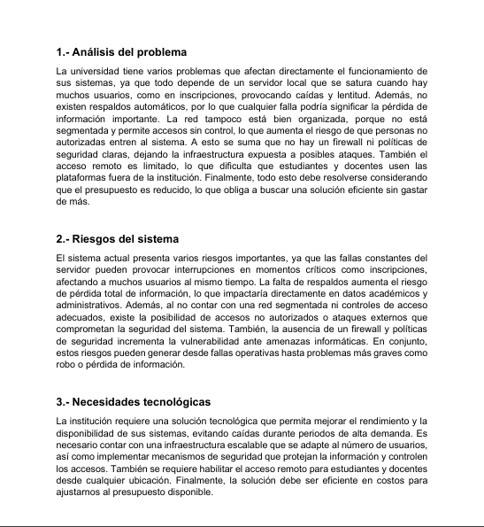
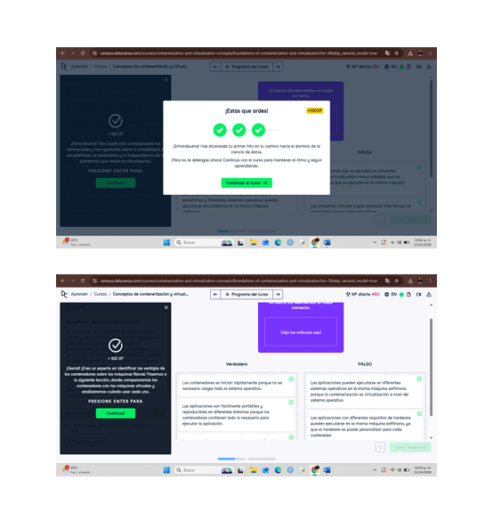
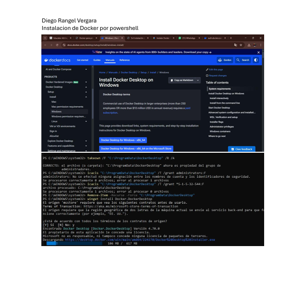
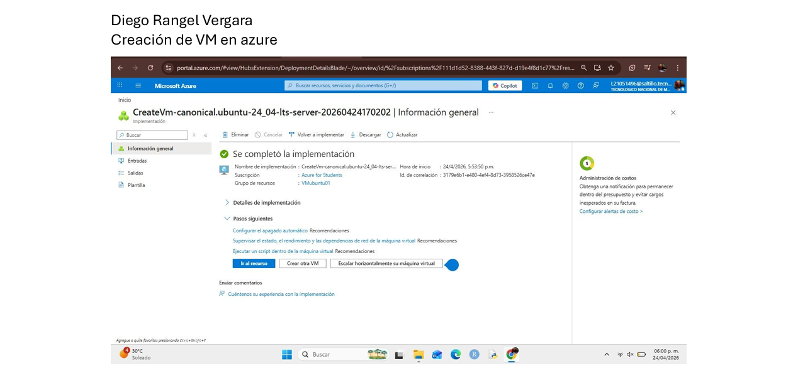
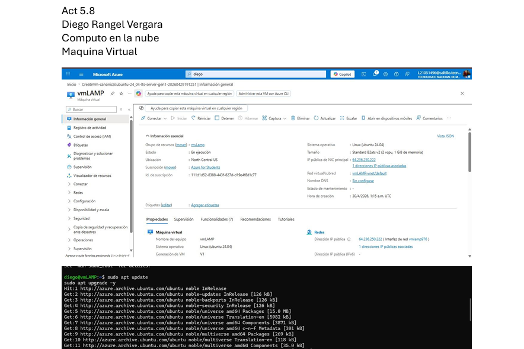
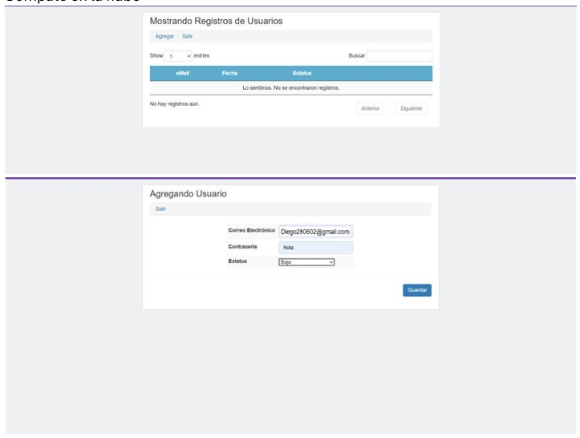
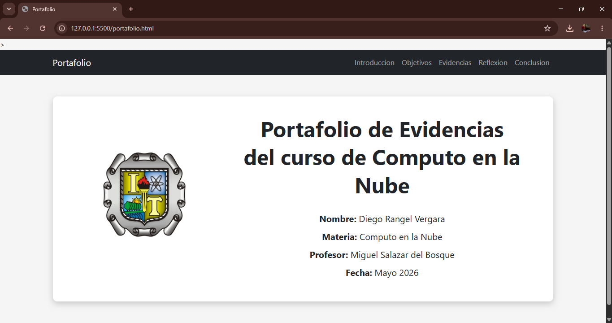

Descripcion: Analizamos una problematica real, diseñamos una arquitectura en la nube, seleccionamos servicios de Amazon web service, google cloud, justificamos decisiones tecnicas y economicas para estimar costos.
Fecha: 16 Abril 2026
Aprendizaje: Aprendi a estructurar redes en entornos cloud.
Reflexion: Entendi la importancia de una buena arquitectura.

Descripcion: Comprender los conceptos de Contenerización y Virtualización para utilizar las tecnologías de Docker y Kubernets y diferenciar correctamente las máquinas virtuales y contenedores con el objetivo de utilizar bien los recursos del cómputo en la nube.
Fecha: 21 Abril 2026
Aprendizaje: Aprendi el funcionamiento de Docker y VM.
Reflexion: Importante para desarrollo moderno.

Descripcion: Instalacion y configuracion de Docker.
Fecha: 22 Abril 2026
Aprendizaje: Aprendi a instalar y usar contenedores.
Reflexion: Facilita el desarrollo de aplicaciones.

Descripcion: Crear una máquina virtual Ubuntu y conectarse por SSH.
Fecha: 23 Abril 2026
Aprendizaje: Aprendi a crear y administrar VM.
Reflexion: Base para infraestructura cloud.

Descripcion: Instalacion del entorno LAMP en VM.
Fecha: 27 Abril 2026
Aprendizaje: Aprendi a instalar Apache, MySQL, PHP.
Reflexion: Base para aplicaciones web.

Descripcion: Desarrollo y despliegue de aplicacion.
Fecha: 28 Abril 2026
Aprendizaje: Aprendi a desplegar aplicaciones.
Reflexion: Poner en practica todo lo aprendido.

Descripcion: Migracion de servicios a cloud.
Fecha: 4 Mayo 2026
Aprendizaje: Entendi procesos de migracion.
Reflexion: Importante para empresas modernas.
Descripcion: Integracion de todas las actividades.
Fecha: 5 Mayo 2026
Aprendizaje: Uso completo de tecnologias web.
Reflexion: Refleja todo lo aprendido en el curso.
